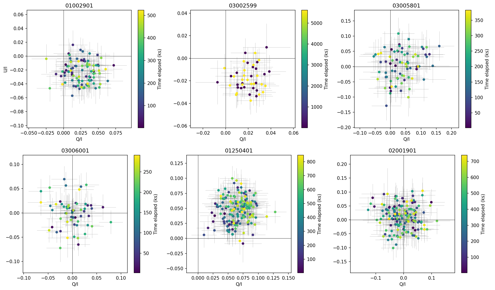

数値の出所と、コードの審査を分ける
auto_researchと呼ぶ仕組みは、HEASARCの公開データを取得し、必要な解析ツールを作り、結果を報告します。研究の問いは人が設定し、複数のAIが解析を分担します。どの処理を行い、どの出力から結論を得たかを追えるように設計されています。
報告の数値は、記録されたツール出力や依頼文に存在するか、引用論文内の場所が示される場合に認められます。一方、新しいツールには反復テストなどの自動検査と、作成者とは別の提供元のモデルによるコードレビューを課します。信頼するブランチへ昇格させる最終判断は人が担います。この境界が、題名にある「半自律」の意味です。
既知の観測結果をどれだけ再現したか
著者はIXPE衛星によるX線偏光のデータで四つの解析課題を試しました。はくちょう座X-1の既報との比較では、14個の量すべてが、両者の誤差を合わせた3σ以内で一致しました。偏光度に関する量は一貫して既報を下回りました。この系統的なずれは報告されていますが、原因は分かっていません。
別の試験では主要な役割に性能の低いモデルを配置しましたが、14個中12個の量を再現しました。残る2個は必要なモデルを当てはめるツールがなく、未測定と報告されています。数値を埋めて体裁を整えることより、測れなかった範囲を残すことが検証に役立ちます。ただし、限られた課題での成績を、天文学のあらゆる解析に一般化することはできません。
欠陥を止める一方で、正しい変更も止まる
意図的に65個の欠陥を埋め込んだ試験では、自動検査だけを47個が通過しました。その後のレビューを含めると、通過した欠陥は1個に減ります。一方、欠陥のない69個の対照変更のうち40個もレビューで拒否されました。検出率だけでなく、正しい変更を止める負担も同時に示した結果です。
観測の結論にも点検が必要でした。6観測の偏光安定性を調べた例では、一つの検定のp値は0.0079でしたが、6回の試行を考慮すると0.046となり、変動の示唆は境界的です。しかも、この観測では偏光度そのものが有意に検出されておらず、確かな偏光変動の発見とはいえません。また29観測を一緒に扱ったときの偏光度とスペクトルの硬さの強い相関には、X線吸収の扱いや天体ごとの違いが影響していました。数値が出ることと、その科学的な意味を正しく読むことは別の課題です。
追跡可能性は、正しさの保証ではない
下図は、時間区間ごとに測った規格化ストークスパラメータqとuを示す、実際の解析出力です。こうした図まで出所をたどれることは有用ですが、著者自身も、出典を強制する仕組みは数値の正しさを保証しないと述べています。欠陥のあるツールが検査を通れば、その出力も報告に採用され得ます。出力内の数値の存在を確認しても、正しい場所から引用されたかは別問題です。
評価は類似したX線データの四課題に限られ、後の解析が過去の結論をどれほど訂正するか、ツールをどれほど再利用するか、人が検証する費用はまだ測られていません。この研究の意義は、人を不要にしたという点ではなく、点検する対象を記録と再利用可能なコードとして残し、その検査にも誤りがあることを具体的に示した点にあります。


図を選ぶと原寸画像を開けます。